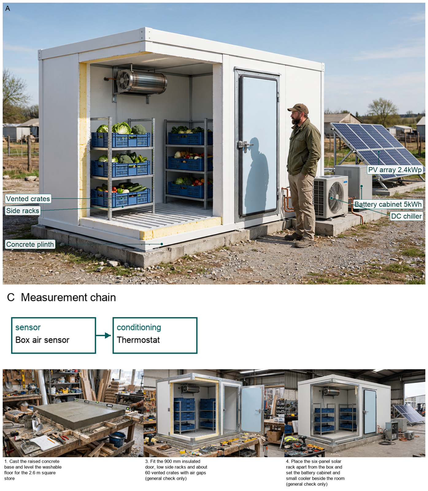
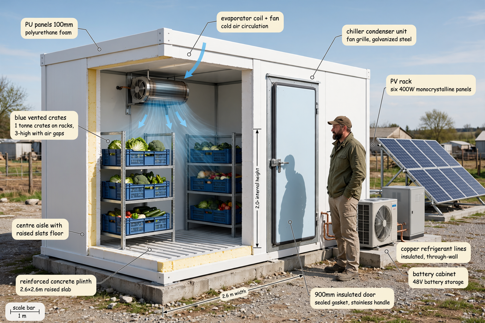
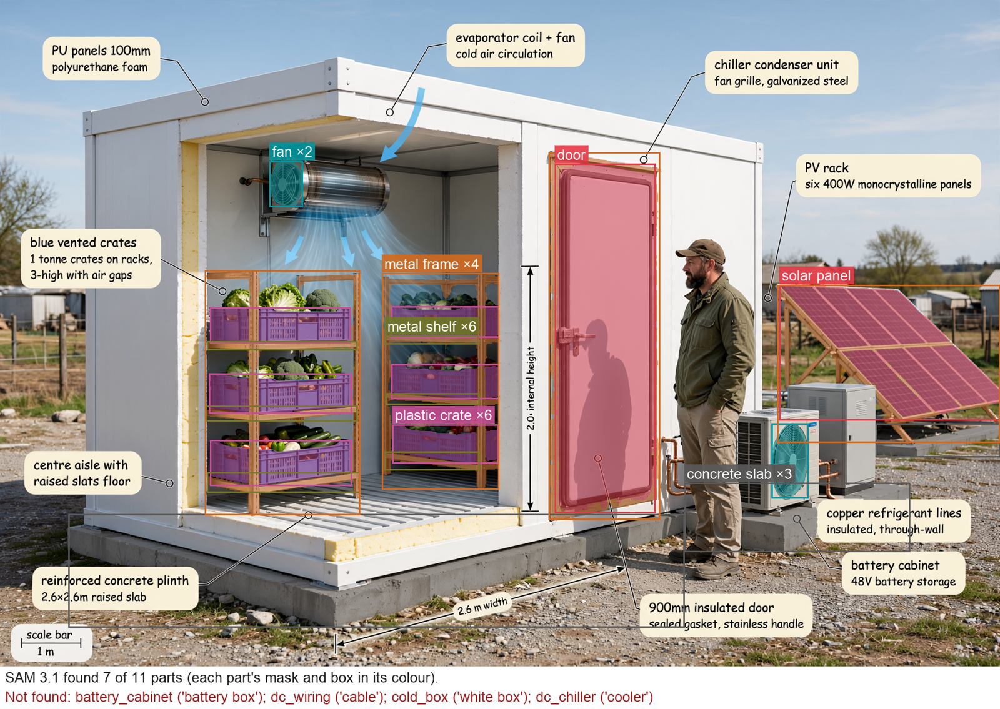

Hardware Scientist — concept report
Off-grid solar-powered cold storage for smallholder farmers
Smallholder farmers in hot regions without grid electricity lose a large share of their fruit and vegetables after harvest because they cannot keep them cool. Design an energy-efficient, solar-powered cold storage unit that a farming cooperative can use to keep fresh produce cool until it is sold.
- No grid electricity; solar energy only
- Store about 1 tonne of fresh produce
The concept

Sunlight makes electricity that is saved for night to run a small cooler that keeps a thick foam room with vented produce crates at 4 C to 10 C.
Energy: PV array -> Battery cabinet -> DC chiller | Measured: Box air sensor -> Thermostat
Three decisive design choices
- Cap warm intake at 200 kg per day and add no warm crates on cloudy days to stay inside PV yield and battery store
- Use 100 mm foam box with 2.4 kWp solar field and 5 kWh store to cover holding plus batch with about 1.4-day holding autonomy
- Run steady 150 W hold with 0.4 kW daytime batch peak on a separate PV rack and sealed shaded door to keep heat gain and wind load low
Will the store stay at 4-10 C with real door openings and produce types beyond the 1.42-day no-batch hold?
What happened
How the picture was made


What the critic flagged:
- callout: callout 'PU panels 100mm polyurethane foam' includes numbers and extra words
- callout: callout 'evaporator coil + fan cold air circulation' includes extra description beyond name
- callout: callout 'chiller condenser unit fan grille, galvanized steel' includes extra description
- callout: callout 'PV rack six 400W monocrystalline panels' includes numbers
- callout: callout 'blue vented crates 1 tonne crates on racks, 3-high with air gaps' includes numbers
- callout: callout 'centre aisle with raised slats floor' extra description
- callout: callout 'reinforced concrete plinth 2.6x2.6m raised slab' includes numbers
- callout: scale bar graphic with 'scale bar 1 m' numbers
- callout: vertical dimension arrow with '2.0m internal height' numbers
- callout: dimension label '2.6 m width' with arrow includes numbers
- callout: callout 'copper refrigerant lines insulated, through-wall' extra description
- callout: callout 'battery cabinet 48V battery storage' includes numbers
- callout: callout '900mm insulated door sealed gasket, stainless handle' includes numbers
What the segmenter saw (SAM 3.1)
Code asked SAM for each part by a plain phrase and measured the boxes against what the design expects; the critic received the differences as evidence.

How the council changed
The council's instructions were not rewritten in this run.
References
68 sources found by the council's searches and the prior-art check (click to open)
- howphilippines.com — On-Grid vs. Off-Grid vs. Hybrid: Which Solar Panel Setup Suits Your Philippine Household? https://howphilippines.com/which-solar-panel-setup-suits/
- au.renogy.com — Rover Lite 12V/ 24V/ 36V/ 48V 60A MPPT Solar Charge Controller https://au.renogy.com/products/rover-lite-12v-24v-36v-48v-60a-mppt-solar-charge-controller
- tsolar.top — PowMr HHJ60-PRO 60A 12V/24V/36V/48V MPPT Solar Charge Controller with https://tsolar.top/products/powmr-hhj60-pro-60a-12v-24v-36v-48v-mppt-solar-charge-controller
- solar.se.com — Conext™ MPPT 60 150 solar charge controller (2021) https://solar.se.com/eu/wp-content/uploads/sites/4/2021/10/Conext-MPPT-60-150-Datasheet.pdf
- shsandwichpanel.com — Cold Room PU Sandwich Panel - Shandong Shanghe https://www.shsandwichpanel.com/150mm-coolroom/cool-room-panels.html
- wiskindsteelstructure.com — Global 500 PU PIR Sandwich Panels For Cold Room Partition Wall Supplier | WISKIND https://www.wiskindsteelstructure.com/pu-pir-sandwich-panels-for-cold-room-partition-wall_p123.html
- ecer.com — details uuucyrw p148max 50mm 200mm polyurethane foam sandwich panels cladding cold room insulated outdoor.html https://www.ecer.com/corp/details-uuucyrw-p148max-50mm-200mm-polyurethane-foam-sandwich-panels-cladding-cold-room-insulated-outdoor.html
- ftp.academicjournals.org — African Journal of Agricultural Research - potential causes of postharvest losses, low-cost cooling technology for fresh produce farmers in sub-sahara africa https://ftp.academicjournals.org/journal/AJAR/article-full-text/BF1684363518
- icar.org.in — ICAR-CIAE, Bhopal developes Low Cost, Low Energy based on-farm storage system for enhancing the shelf life of fresh agro commodities: A boon for farmers and stakeholders http://www.icar.org.in/en/icar-ciae-bhopal-developes-low-cost-low-energy-based-farm-storage-system-enhancing-shelf-life-fresh
- scribd.com — Design of Cold Storage Structure For Thousand PDF | PDF | Refrigeration | Vegetables https://www.scribd.com/document/409544472/Design-of-Cold-Storage-Structure-For-Thousand-pdf
- themescenter.online — How Many Solar Panels Do I Need? https://www.themescenter.online/blog/how-many-solar-panels/index.html
- sino-cold.en.made-in-china.com — 12V 24V Micro Refrigerator Compressor Zh2012A Zh2024A Zh2048A - 24V Refrigerator Compressor and Mini Refrigerator Compressor (2012) https://sino-cold.en.made-in-china.com/product/oxFrMvVArjkW/China-12V-24V-Micro-Refrigerator-Compressor-Zh2012A-Zh2024A-Zh2048A.html
- sino-cold.en.made-in-china.com — 12V 24V 48V DC Mini Fridge R134A Refrigerator Compressor for Car Truck Camping China Manufacturer Sales Price - DC Mini Fridge Compressor and R134A Refrigerator Compressor https://sino-cold.en.made-in-china.com/product/rJARnhLyaZWb/China-12V-24V-48V-DC-Mini-Fridge-R134A-Refrigerator-Compressor-for-Car-Truck-Camping-China-Manufacturer-Sales-Price.html
- purswave.en.made-in-china.com — Ca1948K 48V Mini Air Cooler DC Refrigeration Units Air Cooled Compressor Units Small Portable Air Conditioner Units for Base Station Electric Cabinet https://purswave.en.made-in-china.com/product/GTKUymFECdhM/China-Ca1948K-48V-Mini-Air-Cooler-DC-Refrigeration-Units-Air-Cooled-Compressor-Units-Small-Portable-Air-Conditioner-Units-for-Base-Station-Electric-Cabinet.html
- plastic2go.com.au — Best Folding Vented 600x400 Plastic Crates for Sale https://www.plastic2go.com.au/product-category/plastic-crates/600x400/folding-vented-iso-crate/weight/1-56-kg/
- plastic2go.com.au — Best Folding Vented 600x400 Plastic Crates for Sale https://www.plastic2go.com.au/product-category/plastic-crates/600x400/folding-vented-iso-crate/minimum-quantity/2200-crates/
- plastic2go.com.au — Best Folding Vented 600x400 Plastic Crates for Sale https://www.plastic2go.com.au/product-category/plastic-crates/600x400/folding-vented-iso-crate/weight/1-76-kg/
- coolingindia.in — Design of Cold Storage for Fruits & Vegetables | Cooling India Monthly Business Magazine on the HVACR Business | Green HVAC industry | Heating, Ventilation, Air conditioning and Refrigeration News Magazine Updates, Articles, Publications on HVACR Business Industry | HVACR Business Magazine https://www.coolingindia.in/design-of-cold-storage-for-fruits-vegetables-2/
- trexon.my — Off-Grid Solar Malaysia: Sabah & Sarawak Guide https://trexon.my/blog/off-grid-solar-malaysia-sabah-sarawak-guide
- coolingindia.in — Design of Cold Storage for Fruits & Vegetables | Cooling India Monthly Business Magazine on the HVACR Business | Green HVAC industry | Heating, Ventilation, Air conditioning and Refrigeration News Magazine Updates, Articles, Publications on HVACR Business Industry | HVACR Business Magazine https://www.coolingindia.in/design-of-cold-storage-for-fruits-vegetables/
- mjae.journals.ekb.eg — EFFECT OF POTATO STACKS HEIGHT AND STORAGE DURATION ON PHYSICAL PROPERTIES OF POTATO TUBERS IN COMMERCIAL COLD STORES https://mjae.journals.ekb.eg/article_98640_3ca6f096f3c19eae94e556b7c9807c3c.pdf
- faolex.fao.org — G 15603 (E) (I-I) Food Act.pmd https://faolex.fao.org:443/docs/pdf/srl132454.pdf
- faolex.fao.org — REGULATION ON FOOD HYGIENE https://faolex.fao.org:443/docs/pdf/tur111343E.pdf
- faolex.fao.org — mlt35655.max https://faolex.fao.org/docs/pdf/mlt35655.pdf
- bestsuppliers.com — PU polyurethane foam 100mm insulation board cold room panel sandwich panels https://www.bestsuppliers.com/products/1jdhuf4pdpsp/pu-polyurethane-foam-100mm-insulation-board-cold-room-panel-sandwich-panels
- yuyan-refrigeration.en.made-in-china.com — Wall Panel for Freezer Room with PU Foam - 2026 Polyurethane Sandwich Panel, Sandwich Panel price | Made-in-china.com (2026) https://yuyan-refrigeration.en.made-in-china.com/product/mNhxXusOXTcf/China-Wall-Panel-for-Freezer-Room-with-PU-Foam.html
- yuyan-refrigeration.en.made-in-china.com — Cold Room Panel with Polyurethane Foam - 2026 Polyurethane Sandwich Panel, PU Panel price | Made-in-china.com (2026) http://yuyan-refrigeration.en.made-in-china.com/product/bCWEvujPfTVB/China-Cold-Room-Panel-with-Polyurethane-Foam.html
- enfsolar.com — Lina Energy | Anthracite 400W | Solar Panel Datasheet | ENF Panel Directory https://www.enfsolar.com/pv/panel-datasheet/crystalline/71744
- metals4u.co.uk — 40mm x 40mm x 3mm Galvanised Steel Angle | metals4U https://www.metals4u.co.uk/materials/mild-steel/mild-steel-angle-iron/100264-p
- en.lsdsteel.com — High Quality Best-Selling Zero Spangle Galvanized Steel - Profile Steel – Lishengda Exporter and Manufacturer | Lishengda http://en.lsdsteel.com/best-selling-zero-spangle-galvanized-steel-profile-steel-lishengda-product/
- lsdsteel.com — High Quality Professional China Cold Rolled Galvanized Steel Sheet - Profile Steel – Lishengda Exporter and Manufacturer | Lishengda http://www.lsdsteel.com/professional-china-cold-rolled-galvanized-steel-sheet-profile-steel-lishengda-2-product/
- spaworld.co.nz — Generic Concrete Slab or Pad Building Guide | Portable Spas https://www.spaworld.co.nz/learn/how-to-build-a-generic-concrete-slab-or-pad-for-a-portable-spa-pool/
- amcfoam.com — Revised: March 2010 (2010) https://amcfoam.com/PDFs/Normal%20and%20Problem%20Soils.pdf
- doczz.net — structural slab design structural slab soil loading https://doczz.net/doc/8663516/structural-slab-design-structural-slab-soil-loading
- device.report — DNA 108 BF10 400W Datasheet https://device.report/m/e172ef933f24b7bd742bc808e06c6d3675199c46e667eb7e0fd6b57aacee1e74
- jslpowerin.com — 400W-420W FLEXIBLE SOLAR PANEL – PRODUCT DATASHEET (2026) https://www.jslpowerin.com/wp-content/uploads/2026/08/400-420W_-Flexible_Solar_Panel_Product_Datasheet.pdf
- bigweibattery.com.au — 48V 100AH Energy Storage Solar Lithium Battery LiFePO4 Off-Grid https://www.bigweibattery.com.au/product/100ah-48v-lifepo4-lithium-marine-boat/
- nabellasstores.com — LC-Star 48V 100Ah LiFePO4 Solar Battery 5KWh - Lithium Solar Battery - Nabellas Stores https://nabellasstores.com/product/lc-star-48v-100ah-lifepo4-solar-battery-5kwh-lithium-solar-battery/
- thesolarstore.com — EG4 LifePower4 48V 5.12kWh 100Ah Lithium Iron Phosphate Battery https://thesolarstore.com/products/eg4-lifepower4-48v-5-12kwh-100ah-lithium-iron-phosphate-battery
- ismcontainers.com — Talus Renewables and ISM Containers Transform Fertilizer Production in Kenya https://ismcontainers.com/talus-renewables-and-ism-containers-transform-fertilizer-production-in-kenya/
- pv-magazine.com — Solar-powered cooling system for crop storage https://www.pv-magazine.com/2020/11/03/solar-powered-cooling-system-for-vegetable-storage/
- techwin.co.ke — Solar Cold Rooms https://www.techwin.co.ke/coldstorages-equipment/coldrooms-storages/solar-cold-rooms
- pv-magazine.com — Solar-powered cold storage service https://www.pv-magazine.com/2021/06/08/solar-powered-cold-storage-service/
- techwin.co.ke — Solar Powered Cold Rooms https://www.techwin.co.ke/dairy-equipment/cold-storage-solutions/coid/solar-powered-cold-rooms
- researchgate.net — Mitigating Post-Harvest Losses in Sub-Saharan Africa: A Hybrid Solar-Powered Cold Storage System with Passive Evaporative Cooling and Smart Monitoring for Smallholder Farmers https://www.researchgate.net/publication/395704662_Mitigating_Post-Harvest_Losses_in_Sub-Saharan_Africa_A_Hybrid_Solar-Powered_Cold_Storage_System_with_Passive_Evaporative_Cooling_and_Smart_Monitoring_for_Smallholder_Farmers
- indiacleanenergy.com — Solar-Cold-Storage https://indiacleanenergy.com/solar-cold-storage/
- insulatedsystemsltd.com — Solar Cold Rooms – Insulated Systems https://insulatedsystemsltd.com/solar-cold-rooms/
- greenworldinvestor.com — all You Wanted to Know About Solar Powered Cold Storage Mobile Units in India https://greenworldinvestor.com/all-you-wanted-to-know-about-solar-powered-cold-storage-mobile-units-in-india/
- solarsolutions4everyone.co.za — Solar Cold Storage: Powering Food Security https://solarsolutions4everyone.co.za/nb/surs/Solar-Cold-Storage:-Powering-Food-Security_Fri-10-Jun-2022-3406.pdf
- africaprize.raeng.org.uk — Nnaemeka Chidiebere Ikegwuonu https://africaprize.raeng.org.uk/2018-cohort/nnaemeka-chidiebere-ikegwuonu
- techxlab.org — Cold Rooms by ColdHubs https://techxlab.org/solutions/cold-rooms-by-coldhubs/
- understandsolar.com — A Communal Solar Fridge for Nigerian Farmers Markets https://understandsolar.com/a-communal-solar-fridge-for-nigerian-farmers-markets/
- renewableenergymagazine.com — The Rise of the Energy Entrepreneur: How Individuals Are Profiting From Renewables https://www.renewableenergymagazine.com/jane-marsh/the-rise-of-the-energy-entrepreneur-how-20261019
- energypedia.info — ColdHubs - Solar Cold Rooms in Nigeria https://energypedia.info/index.php?title=ColdHubs_-_Solar_Cold_Rooms_in_Nigeria&oldid=304340
- energypedia.info — ColdHubs - Solar Cold Rooms in Nigeria https://energypedia.info/index.php?title=ColdHubs_-_Solar_Cold_Rooms_in_Nigeria&direction=prev&oldid=304357
- afritechconnect.com — 3 African Innovations Fighting Fish Spoilage and Food Waste https://afritechconnect.com/article/africa-loses-one-third-of-its-fish-to-spoilage-these-3-innovations-are-fighting-back
- ccacoalition.org — ColdHubs Ltd. | Climate & Clean Air Coalition https://www.ccacoalition.org/content/coldhubs-ltd
- sidley.com — ColdHubs Ltd | Sidley Emerging Enterprises Pro Bono Program | Pro Bono | Sidley Austin LLP https://www.sidley.com/en/probonolanding/sidley-emerging-enterprises-pro-bono-program/projects/coldhubs-ltd
- ng.linkedin.com — ColdHubs Limited | LinkedIn https://ng.linkedin.com/company/coldhubslimited?trk=article-ssr-frontend-pulse_little-mention
- smartbuy.alibaba.com — How to Choose Ecozen Cold Storage: A Complete Buyer's Guide https://smartbuy.alibaba.com/buyingguides/ecozen-cold-storage
- iiec.org — Ecofrost - Portable, solar powered cold rooms (Ecozen solutions) https://www.iiec.org/coolingdemo-technologies/720-cold-storage-and-food-processing/677-ecofrost-portable-solar-powered-cold-rooms-ecozen-solutions
- ecozensolutions.com — ecofrost in Kenya https://www.ecozensolutions.com/agriculture/ecofrost-in-kenya.html
- pv-magazine-india.com — Solar-powered cold storage as a service https://www.pv-magazine-india.com/2021/06/07/solar-powered-cold-storage-as-a-service/
- 5.imimg.com — PowerPoint Presentation https://5.imimg.com/data5/SELLER/Doc/2022/12/LV/EM/KI/18386671/solar-powered-cold-storage.pdf
- engineeringforchange.org — EcoFrost Micro Cold Storage https://www.engineeringforchange.org/solutions/product/ecofrost-micro-cold-storage/
- efficiencyforaccess.org — High Hopes for Off-Grid Cold Chain Solutions in Rural Kenya - Efficiency for Access https://efficiencyforaccess.org/?p=3286
- eco-business.com — How apps, AI and solar-powered cold rooms are driving sustainable agriculture https://www.eco-business.com/id/news/how-apps-ai-and-solar-powered-cold-rooms-are-driving-sustainable-agriculture/
- indiamart.com — Ecofrost Solar Cold Room https://www.indiamart.com/proddetail/ecofrost-solar-cold-room-20855381197.html
Files
Run 20261102-112524_off-grid-solar-powered-cold-storage-for- · total cost $2.27 · conceptual illustration — physical performance not established.